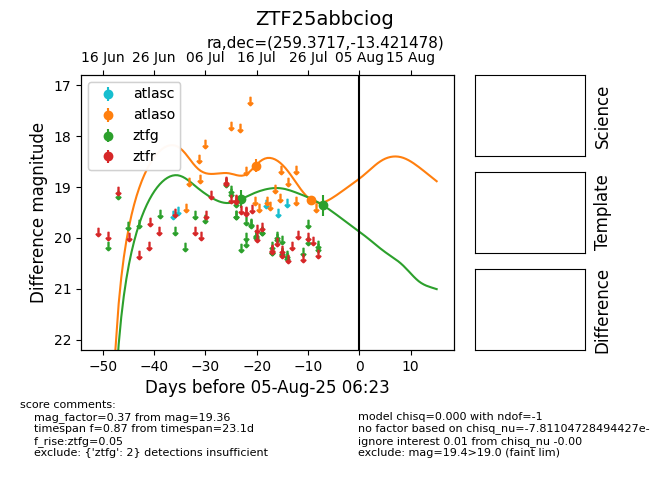

Target ZTF25abbciog at 2025-08-05 07:33, see:
FINK: fink-portal.org/ZTF25abbciog
Lasair: lasair-ztf.lsst.ac.uk/objects/ZTF25abbciog
ALeRCE: alerce.online/object/ZTF25abbciog
alt names
ZTF25abbciog (ztf,fink)
coordinates:
equatorial (ra, dec) = (259.3717,-13.42148)
galactic (l, b) = (9.6780,+13.83822)
photometry
last atlaso=19.25, ztfg=19.36
2 atlaso, 2 ztfg detections
